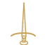
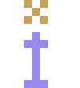
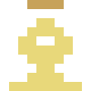
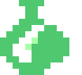

Combatente
Especialista em combate direto, resistente e letal no front.
Ver trilhaUm sistema de RPG Old School!
As Trilhas são as especializações de cada personagem. Aquilo em que ele foca, aquilo que o transforma em um aventureiro. O conjunto de Trilhas e seus ranks é o que acaba definindo o que o personagem é. Trilhas não são exatamente o mesmo que as classes em outros jogos. São coisas parecidas, porém não idênticas. Pense em uma Trilha como um conjunto de perÃcias e habilidades que o personagem aprendeu ao longo do caminho.
Este site é o SRD do sistema: aqui você encontra todas as regras, trilhas, magias e materiais de apoio para jogar.

Especialista em combate direto, resistente e letal no front.
Ver trilhaExplorador ágil, especializado em ataque à distância.
Ver trilhaPerito em armadilhas, truques, emboscadas e soluções criativas.
Ver trilha
Manipula energias arcanas para resolver conflitos.
Ver trilhaConversa com espÃritos,canaliza forças primais e manipula a natureza.
Ver trilha
Serve a divindades, concede bênçãos e castigos divinos.
Ver trilha
Luta lado a lado com companheiros animais.
Ver trilhaUm mestre manipulador de runas.
Ver trilha
Tece músicas e histórias que alteram o curso dos encontros.
Ver trilha
Mistura reagentes, poções e venenos para dobrar a realidade.
Ver trilhaProtege aliados, segura a linha de frente e bloqueia ameaças.
Ver trilhaMuda de forma, assumindo aspectos de criaturas variadas.
Ver trilha